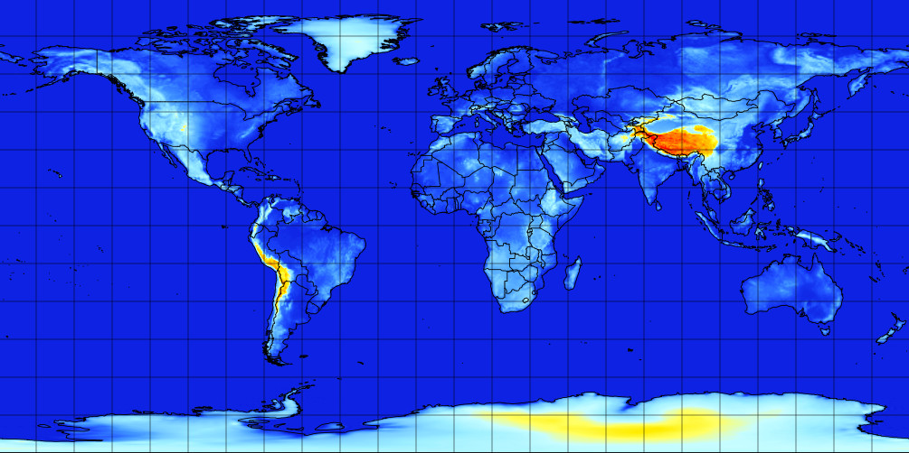

arpege-world

📂 Browse arpege-world dataset
Coverage
Global at 0.5° (~55km) resolution
Static files
Timesteps
- 0h → 96h: 3-hourly
- 96h → end: 6-hourly
Range
- Run 00: up to 102h
- Run 06: up to 72h
- Run 12: up to 114h
- Run 18: up to 72h
V1 dataset packages
00H24H, 27H48H, 51H72H, 75H102H, 105H114H
SP1, SP2, HP1, HP2, IP1, IP2, IP3, IP4